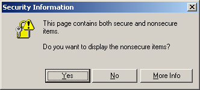
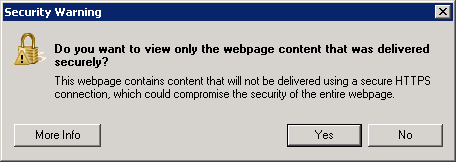

IE 遇到一個頁面同時含有 http:// 跟 https:// 不同協定的內容時（例如一個 http:// 頁面包含一個指向 http:// 的 iframe），會跳出下面的警告視窗：
IE6, IE7
This page contains both secure and nonsecure items.Do you want to display the nonsecure items?
IE8
Do you want to view only the webpage content that was delivered securely?This webpage contains content that will not be delivered using a secure HTTPS connection, which could compromise the security of the entire webpage.
相當然爾，IE9 的反應又會不太一樣…
如果在自動化測試的過程中遇到這個問題，無論是用 AutoIt 去點掉，或許調整 security 讓這個對話框不跳出來，這些做法都不太妥當，因為它根本就是個 bug，使用者看到這個視窗肯定會覺得非常的不舒服。最正確的方法應該是調整網頁的內容，讓它不要同時包含 http:// 跟 https:// 的內容就好。
如果真想要調整 security 的設定，尤其是網頁的內容不是你可以控制的時候，可以這麼做：
-
Tools > Internet Options… > Security > Custom level…
-
把 Miscellaneous > Display mixed content 從 Prompt 調整成 Enable。
AutoIt 乍看之下好像行得通，不過這個問題通常出現在用 open() 直接開啟某個 URL 時，而 open() 會被這個對話框卡住（更糟的是，open() 固定會等頁面載入完成），最後丟出 timeout 的錯誤。也就是說 Selenium 開啟某個頁面的過程中，AutoIt 沒有機會介入把該對話框點掉，除非在 open() 前先讓 AutoIt 在另一個 thread 伺機而動…